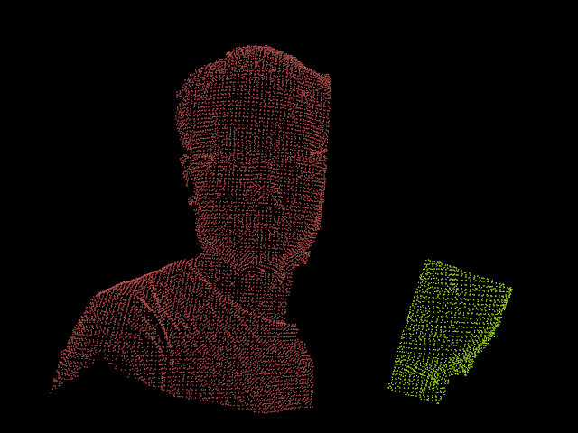
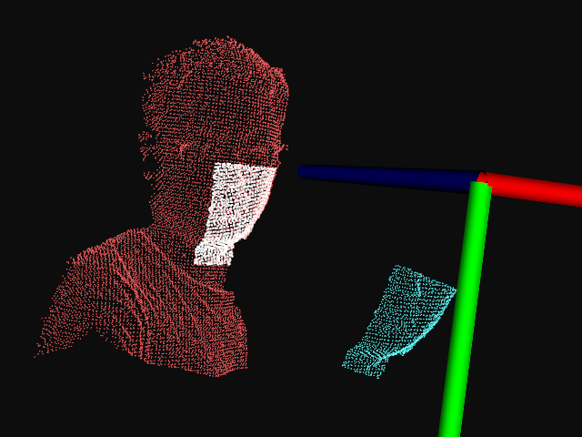

点云模板匹配¶
接下来我们将使用学过的工具来解决更高实际的需求，将先前捕获的对象模型与新捕获的数据对齐。在此示例中，我们将拍摄一个包含一个人的深度图像，并尝试拟合先前捕获的人脸模板（1个或多个）；以确定场景中人脸的位置和方向。深度图及模板图如下：

红色为新拍摄的深度图像，绿色为先前制作好的人脸模板。
代码实现¶
创建文件：template_alignment.cpp
#include <limits>
#include <fstream>
#include <vector>
#include <Eigen/Core>
#include <pcl/point_types.h>
#include <pcl/point_cloud.h>
#include <pcl/io/pcd_io.h>
#include <pcl/kdtree/kdtree_flann.h>
#include <pcl/filters/passthrough.h>
#include <pcl/filters/voxel_grid.h>
#include <pcl/features/normal_3d.h>
#include <pcl/features/fpfh.h>
#include <pcl/registration/ia_ransac.h>
#include <pcl/visualization/cloud_viewer.h>
#include <pcl/search/impl/search.hpp>
typedef pcl::visualization::PointCloudColorHandlerCustom<pcl::PointXYZ> PCLHandler;
class FeatureCloud {
public:
// A bit of shorthand
typedef pcl::PointCloud<pcl::PointXYZ> PointCloud;
typedef pcl::PointCloud<pcl::Normal> SurfaceNormals;
typedef pcl::PointCloud<pcl::FPFHSignature33> LocalFeatures;
typedef pcl::search::KdTree<pcl::PointXYZ> SearchMethod;
FeatureCloud() :
search_method_xyz_(new SearchMethod),
normal_radius_(0.02f),
feature_radius_(0.02f) {}
~FeatureCloud() {}
// Process the given cloud
void
setInputCloud(PointCloud::Ptr xyz) {
xyz_ = xyz;
processInput();
}
// Load and process the cloud in the given PCD file
void
loadInputCloud(const std::string &pcd_file) {
xyz_ = PointCloud::Ptr(new PointCloud);
pcl::io::loadPCDFile(pcd_file, *xyz_);
processInput();
}
// Get a pointer to the cloud 3D points
PointCloud::Ptr
getPointCloud() const {
return (xyz_);
}
// Get a pointer to the cloud of 3D surface normals
SurfaceNormals::Ptr
getSurfaceNormals() const {
return (normals_);
}
// Get a pointer to the cloud of feature descriptors
LocalFeatures::Ptr
getLocalFeatures() const {
return (features_);
}
protected:
// Compute the surface normals and local features
void
processInput() {
computeSurfaceNormals();
computeLocalFeatures();
}
// Compute the surface normals
void
computeSurfaceNormals() {
// 创建表面法向量
normals_ = SurfaceNormals::Ptr(new SurfaceNormals);
// 计算表面法向量
pcl::NormalEstimation<pcl::PointXYZ, pcl::Normal> norm_est;
norm_est.setInputCloud(xyz_);
norm_est.setSearchMethod(search_method_xyz_);
norm_est.setRadiusSearch(normal_radius_);
norm_est.compute(*normals_);
}
// Compute the local feature descriptors
/**
* 根据表面法向量 计算本地特征描述
*/
void
computeLocalFeatures() {
features_ = LocalFeatures::Ptr(new LocalFeatures);
pcl::FPFHEstimation<pcl::PointXYZ, pcl::Normal, pcl::FPFHSignature33> fpfh_est;
fpfh_est.setInputCloud(xyz_);
fpfh_est.setInputNormals(normals_);
fpfh_est.setSearchMethod(search_method_xyz_);
fpfh_est.setRadiusSearch(feature_radius_);
fpfh_est.compute(*features_);
}
private:
// Point cloud data
PointCloud::Ptr xyz_;
SurfaceNormals::Ptr normals_;
LocalFeatures::Ptr features_; // 快速点特征直方图 Fast Point Feature Histogram
SearchMethod::Ptr search_method_xyz_; // KDTree方法查找邻域
// Parameters
float normal_radius_;
float feature_radius_;
};
class TemplateAlignment {
public:
// A struct for storing alignment results
struct Result {
// 匹配分数
float fitness_score;
// 转换矩阵
Eigen::Matrix4f final_transformation;
EIGEN_MAKE_ALIGNED_OPERATOR_NEW
};
TemplateAlignment() :
min_sample_distance_(0.05f),
max_correspondence_distance_(0.01f * 0.01f),
nr_iterations_(500) {
// Intialize the parameters in the Sample Consensus Intial Alignment (SAC-IA) algorithm
sac_ia_.setMinSampleDistance(min_sample_distance_);
sac_ia_.setMaxCorrespondenceDistance(max_correspondence_distance_);
sac_ia_.setMaximumIterations(nr_iterations_);
}
~TemplateAlignment() {}
// Set the given cloud as the target to which the templates will be aligned
void
setTargetCloud(FeatureCloud &target_cloud) {
target_ = target_cloud;
// 设置输入target点云
sac_ia_.setInputTarget(target_cloud.getPointCloud());
// 设置特征target
sac_ia_.setTargetFeatures(target_cloud.getLocalFeatures());
}
// Add the given cloud to the list of template clouds
void
addTemplateCloud(FeatureCloud &template_cloud) {
templates_.push_back(template_cloud);
}
// Align the given template cloud to the target specified by setTargetCloud ()
// 对齐的核心代码
void
align(FeatureCloud &template_cloud, TemplateAlignment::Result &result) {
// 设置输入源
sac_ia_.setInputSource(template_cloud.getPointCloud());
// 设置特征源
sac_ia_.setSourceFeatures(template_cloud.getLocalFeatures());
pcl::PointCloud<pcl::PointXYZ> registration_output;
sac_ia_.align(registration_output);
// 根据最远相应距离计算匹配分数
result.fitness_score = (float) sac_ia_.getFitnessScore(max_correspondence_distance_);
// 获取最终转换矩阵
result.final_transformation = sac_ia_.getFinalTransformation();
}
// Align all of template clouds set by addTemplateCloud to the target specified by setTargetCloud ()
void
alignAll(std::vector<TemplateAlignment::Result, Eigen::aligned_allocator<Result> > &results) {
results.resize(templates_.size());
for (size_t i = 0; i < templates_.size(); ++i) {
align(templates_[i], results[i]);
}
}
// Align all of template clouds to the target cloud to find the one with best alignment score
int
findBestAlignment(TemplateAlignment::Result &result) {
// Align all of the templates to the target cloud
std::vector<Result, Eigen::aligned_allocator<Result> > results;
alignAll(results);
// Find the template with the best (lowest) fitness score
float lowest_score = std::numeric_limits<float>::infinity();
int best_template = 0;
for (size_t i = 0; i < results.size(); ++i) {
const Result &r = results[i];
if (r.fitness_score < lowest_score) {
lowest_score = r.fitness_score;
best_template = (int) i;
}
}
// Output the best alignment
result = results[best_template];
return (best_template);
}
private:
// A list of template clouds and the target to which they will be aligned
std::vector<FeatureCloud> templates_;
FeatureCloud target_;
// The Sample Consensus Initial Alignment (SAC-IA) registration routine and its parameters
pcl::SampleConsensusInitialAlignment<pcl::PointXYZ, pcl::PointXYZ, pcl::FPFHSignature33> sac_ia_;
float min_sample_distance_;
float max_correspondence_distance_;
int nr_iterations_;
};
/**
* 对齐对象模板集合到一个示例点云
* 调用命令格式 ./template_alignment2 ./data/object_templates.txt ./data/person.pcd
* 程序 多个模板的文本文件 目标点云
* 调用命令格式 ./template_alignment2 ./data/object_templates2.txt ./data/target.pcd
* 程序 多个模板的文本文件 目标点云
*
* 实时的拍照得到RGB和深度图
* 合成目标点云图
* 通过直通滤波框定范围（得到感兴趣区域）
* 将感兴趣区域进行降采样（提高模板匹配效率）
*/
int main(int argc, char **argv) {
if (argc < 3) {
printf("No target PCD file given!\n");
return (-1);
}
// Load the object templates specified in the object_templates.txt file
std::vector<FeatureCloud> object_templates;
std::ifstream input_stream(argv[1]);
object_templates.resize(0);
std::string pcd_filename;
while (input_stream.good()) {
// 按行读取模板中的文件名
std::getline(input_stream, pcd_filename);
if (pcd_filename.empty() || pcd_filename.at(0) == '#') // Skip blank lines or comments
continue;
// 加载特征云
FeatureCloud template_cloud;
template_cloud.loadInputCloud(pcd_filename);
object_templates.push_back(template_cloud);
}
input_stream.close();
// Load the target cloud PCD file
pcl::PointCloud<pcl::PointXYZ>::Ptr cloud(new pcl::PointCloud<pcl::PointXYZ>);
pcl::io::loadPCDFile(argv[2], *cloud);
// Preprocess the cloud by...
// ...removing distant points 移除远处的点云
const float depth_limit = 1.0;
pcl::PassThrough<pcl::PointXYZ> pass;
pass.setInputCloud(cloud);
pass.setFilterFieldName("z");
pass.setFilterLimits(0, depth_limit);
pass.filter(*cloud);
// ... and downsampling the point cloud 降采样点云, 减少计算量
// 定义体素大小 5mm
const float voxel_grid_size = 0.005f;
pcl::VoxelGrid<pcl::PointXYZ> vox_grid;
vox_grid.setInputCloud(cloud);
// 设置叶子节点的大小lx, ly, lz
vox_grid.setLeafSize(voxel_grid_size, voxel_grid_size, voxel_grid_size);
//vox_grid.filter (*cloud); // Please see this http://www.pcl-developers.org/Possible-problem-in-new-VoxelGrid-implementation-from-PCL-1-5-0-td5490361.html
pcl::PointCloud<pcl::PointXYZ>::Ptr tempCloud(new pcl::PointCloud<pcl::PointXYZ>);
vox_grid.filter(*tempCloud);
cloud = tempCloud;
// 保存滤波&降采样后的点云图
pcl::io::savePCDFileBinary("pass_through_voxel.pcd", *tempCloud);
std::cout << "pass_through_voxel.pcd saved" << std::endl;
// Assign to the target FeatureCloud 对齐到目标特征点云
FeatureCloud target_cloud;
target_cloud.setInputCloud(cloud);
// Set the TemplateAlignment inputs
TemplateAlignment template_align;
for (size_t i = 0; i < object_templates.size(); i++) {
FeatureCloud &object_template = object_templates[i];
// 添加模板点云
template_align.addTemplateCloud(object_template);
}
// 设置目标点云
template_align.setTargetCloud(target_cloud);
std::cout << "findBestAlignment" << std::endl;
// Find the best template alignment
// 核心代码
TemplateAlignment::Result best_alignment;
int best_index = template_align.findBestAlignment(best_alignment);
const FeatureCloud &best_template = object_templates[best_index];
// Print the alignment fitness score (values less than 0.00002 are good)
printf("Best fitness score: %f\n", best_alignment.fitness_score);
printf("Best fitness best_index: %d\n", best_index);
// Print the rotation matrix and translation vector
Eigen::Matrix3f rotation = best_alignment.final_transformation.block<3, 3>(0, 0);
Eigen::Vector3f translation = best_alignment.final_transformation.block<3, 1>(0, 3);
Eigen::Vector3f euler_angles = rotation.eulerAngles(2, 1, 0) * 180 / M_PI;
printf("\n");
printf(" | %6.3f %6.3f %6.3f | \n", rotation(0, 0), rotation(0, 1), rotation(0, 2));
printf("R = | %6.3f %6.3f %6.3f | \n", rotation(1, 0), rotation(1, 1), rotation(1, 2));
printf(" | %6.3f %6.3f %6.3f | \n", rotation(2, 0), rotation(2, 1), rotation(2, 2));
printf("\n");
cout << "yaw(z) pitch(y) roll(x) = " << euler_angles.transpose() << endl;
printf("\n");
printf("t = < %0.3f, %0.3f, %0.3f >\n", translation(0), translation(1), translation(2));
// Save the aligned template for visualization
pcl::PointCloud<pcl::PointXYZ> transformed_cloud;
// 将模板中保存的点云图进行旋转矩阵变换，把变换结果保存到transformed_cloud
pcl::transformPointCloud(*best_template.getPointCloud(), transformed_cloud, best_alignment.final_transformation);
// pcl::io::savePCDFileBinary("output.pcd", transformed_cloud);
// =============================================================================
pcl::visualization::PCLVisualizer viewer("example");
// 设置坐标系系统
viewer.addCoordinateSystem(0.5, "cloud", 0);
// 设置背景色
viewer.setBackgroundColor(0.05, 0.05, 0.05, 0); // Setting background to a dark grey
// 1. 旋转后的点云rotated --------------------------------
pcl::PointCloud<pcl::PointXYZ>::Ptr t_cloud(&transformed_cloud);
PCLHandler transformed_cloud_handler(t_cloud, 255, 255, 255);
viewer.addPointCloud(t_cloud, transformed_cloud_handler, "transformed_cloud");
// 设置渲染属性（点大小）
viewer.setPointCloudRenderingProperties(pcl::visualization::PCL_VISUALIZER_POINT_SIZE, 2, "transformed_cloud");
// 2. 目标点云target --------------------------------
PCLHandler target_cloud_handler(cloud, 255, 100, 100);
viewer.addPointCloud(cloud, target_cloud_handler, "target_cloud");
// 设置渲染属性（点大小）
viewer.setPointCloudRenderingProperties(pcl::visualization::PCL_VISUALIZER_POINT_SIZE, 1, "target_cloud");
// 3. 模板点云template --------------------------------
PCLHandler template_cloud_handler(cloud, 100, 255, 255);
viewer.addPointCloud(best_template.getPointCloud(), template_cloud_handler, "template_cloud");
// 设置渲染属性（点大小）
viewer.setPointCloudRenderingProperties(pcl::visualization::PCL_VISUALIZER_POINT_SIZE, 1, "template_cloud");
while (!viewer.wasStopped()) { // Display the visualiser until 'q' key is pressed
viewer.spinOnce();
}
return (0);
}
执行命令：./template_alignment2 ./data/object_templates2.txt ./data/target.pcd
结果输出¶
/home/ty/Lesson/PCL/Code/PCLDemo/build/Debug/bin/template_alignment2 ./data/object_templates2.txt ./data/target.pcd
pass_through_voxel.pcd saved
findBestAlignment
Best fitness score: 0.000005
Best fitness best_index: 0
| 0.938 0.283 -0.200 |
R = | -0.287 0.958 0.010 |
| 0.194 0.049 0.980 |
yaw(z) pitch(y) roll(x) = 162.967 -168.785 -177.16
t = < -0.147, -0.069, 0.174 >
实现效果¶
